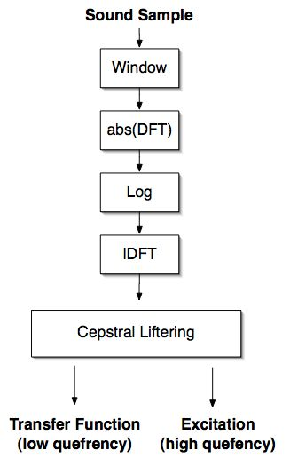
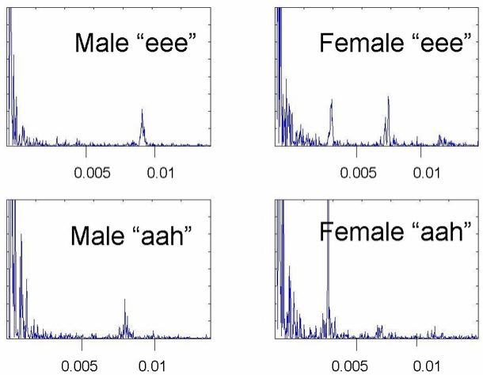

The objective of this experiment is to analyse speech signals by computing the cepstrum for various voiced and unvoiced sounds, study their characteristics using the computed cepstrum and reconstructing the spectrum by retaining various components of the cepstrum.

The Cepstrum
The cepstrum is a common transform used to gain information from a person’s speech signal. It can be used to separate the excitation signal (which contains the words and the pitch) and the transfer function (which contains the voice quality). It is similar to a channel vocoder or LPC in its applications, but using the cepstrum as a spectral analyzer is a completely different process. (It is also worth pointing out that cepstrum is “spectrum” with the first syllable flipped… we will encounter several words with this naming convention.) Before describing the details of the cepstrum, a little background in speech models is needed.
Background Information
Speech is the output of a time-varying vocal-tract system excited by a time-varying modulated airflow. Mathematically, this can be described in the time domain as: $$ x(t) = \int\limits_{0}^{t} g(\tau) h(t-\tau) $$ Since convolution in the time domain is multiplication in the frequency domain, this become: $$X(\omega) = G(\omega)H(\omega) $$ If we take the log of the magnitude of both sides of this transform, we reach: $$ \log|X(\omega)| = \log|G(\omega)| + \log|H(\omega)| $$ Computing the inverse Fourier Transform of this equation brings us into the realm of "quefrency." $$ F ^{− 1} \log| X(\omega) | = F ^{− 1} \log| G(\omega) | + F ^{− 1} \log| H(\omega) | $$ Quefrency is the x-axis of the cepstrum. Its units are in time. Typically the areas of interest are from 0ms to around 10ms. See Figure 1 below for the full process.
|  |
The Use of the Cepstrum
We have now seen the process by which we calculate the cepstrum of a signal. It is now time to dicuss some the uses of the cepstrum. Often after having calculated the cepstrum, we will want to "lifter" the signal. (Once again the naming scheme has been used. This time on the word filter) When we lifter, we are seperating the transfer function (the spectral envelope) and the excitation signal. The transfer function usually appears as a steep slant at the beginning of the plot. The excitation appears as periodic peaks occurring after around 5ms. Below we can see examples of several cepstrum plots. Note how the female voice has peaks occurring more often then in the male’s cepstrum. This is due to the higher pitch of a female voice.
|  |
Adapted from: "Cepstrum," Brian Van Osdol, Connexions, December 21, 2004, http://cnx.org/content/m12469/1.4/ under Creative Commons Attribution License (CC-BY 1.0).

- Study the cepstrum for different regions (voiced/unvoiced/silence) of the speech signal using the examples provided.
- Select one of the example waveforms provided.
- Select a short segment (30 ms) of voiced speech and observe the spectrum as well as cepstrum.
- Repeat the experiment for unvoiced (fricative and stop) and silence regions.
- Note that the cepstrum shows a peak at around the time lag corresponding to the pitch period for segments of voiced speech.
- Measure the pitch period of a voiced segment using the cepstrum.
- Cepstral smoothing of short-term spectrum
- Select only the first few coefficients of the spectrum for a voiced segment of speech, and observe that the liftered spectrum appears smooth.
- Select the cepstral coefficients around the peak corresponding to pitch period, and observe that the liftered spectrum has strong harmonics corresponding to the pitch frequencies.
- Record different sounds for your own voice and study the cepstral features.
- Write a brief note on the observations.


- Cepstrum provides a compact representation of the vocal tract system information.
- The vocal tract system information is characterized by the spectral envelope. This slow varying component in the spectrum is characterized by the first few coefficients in the cepstral domain. Note that cepstrum computation can be interpreted as the spectral analysis of a signal which is the log-magnitude spectrum in this case.
- Note that the pitch period of a voiced segment of speech can be measured from the cepstrum.

- Explain how cepstral analysis of speech signals helps in pattern representation for pattern recognition task.
- What are the advantages and limitations of cepstral domain processing over spectral-domain processing?
- What is the dimensions of an unit in the cepstral domain?
- Explain how cepstral analysis technique can be used to represent the convolutionally combined signals as additively combined signals
- Explain the process of separating source and system characteristics using the cepstrum.
- Explain how pitch information can be extracted from the cepstrum. Write an algorithm to extract pitch using cepstral analysis.

- Digital Processing of Speech Signals, L.R. Rabiner and L.R. Schafer, Chapter 6
- Discrete-Time Speech Signal Processing, Thomas F. Quatieri , Chapter 7
- Digital Speech Processing, Synthesis, and Recognition., Sadaoki Furui., Marcel Deccer, Inc.: New York.